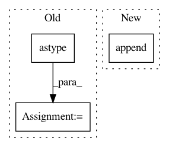

a3a539ed60af074ea3459835c788c2e900f3d8c1,mlxtend/classifier/stacking_cv_classification.py,StackingCVClassifier,predict_meta_features,#StackingCVClassifier#,335
Before Change
.reshape(single_model_prediction.shape[0], 1)
else:
single_model_prediction = model.predict_proba(X)
all_model_predictions = np.hstack((all_model_predictions.
astype(single_model_prediction
.dtype),
single_model_prediction))
return all_model_predictions
def predict(self, X):
Predict target values for X.
After Change
else:
prediction = model.predict_proba(X)
per_model_preds.append(prediction)
return np.hstack(per_model_preds)
def _stack_first_level_features(self, X, meta_features):
In pattern: SUPERPATTERN
Frequency: 3
Non-data size: 3
Instances
Project Name: rasbt/mlxtend
Commit Name: a3a539ed60af074ea3459835c788c2e900f3d8c1
Time: 2019-03-31
Author: ackerleytng@gmail.com
File Name: mlxtend/classifier/stacking_cv_classification.py
Class Name: StackingCVClassifier
Method Name: predict_meta_features
Project Name: scikit-learn-contrib/categorical-encoding
Commit Name: b5034279b48ae96ffdd4714f96e0f62b0f4807fc
Time: 2018-10-26
Author: jcastaldo08@gmail.com
File Name: category_encoders/ordinal.py
Class Name: OrdinalEncoder
Method Name: ordinal_encoding
Project Name: librosa/librosa
Commit Name: 538f969f17ef232c75588dfa2a3157bd97aae45d
Time: 2013-02-11
Author: brm2132@columbia.edu
File Name: librosa/beat.py
Class Name:
Method Name: _beat_tracker